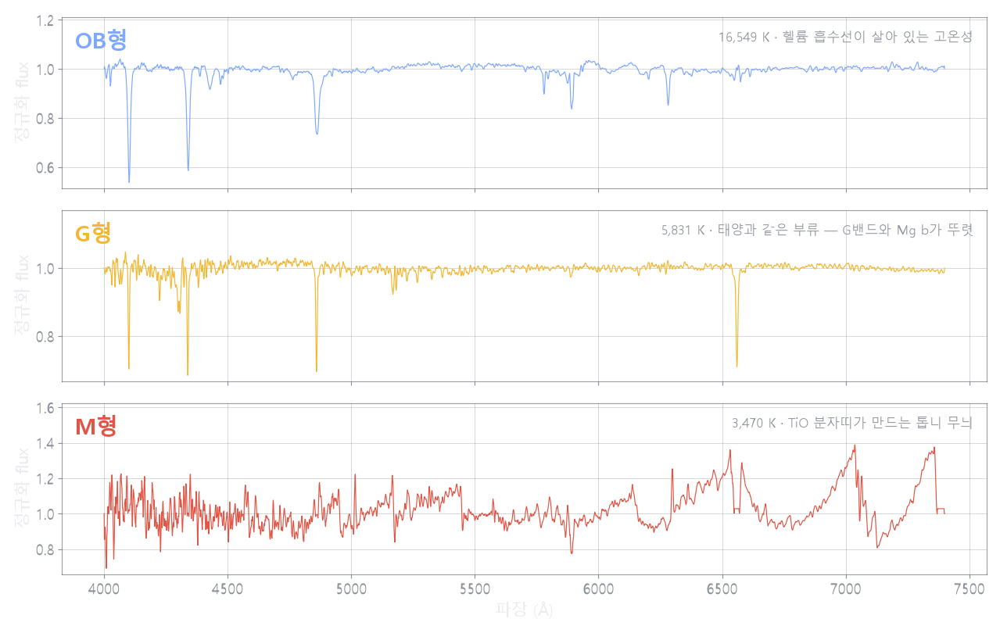
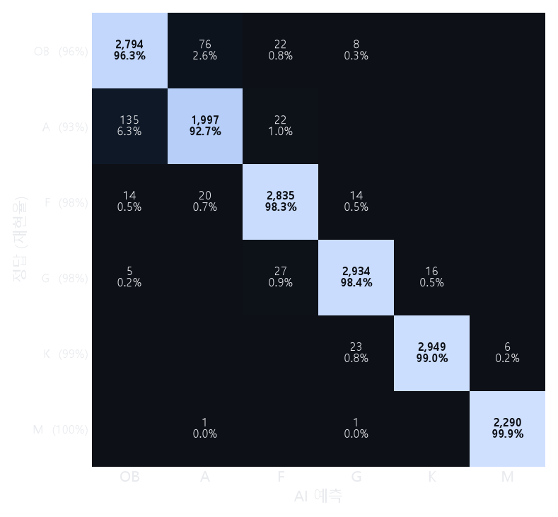
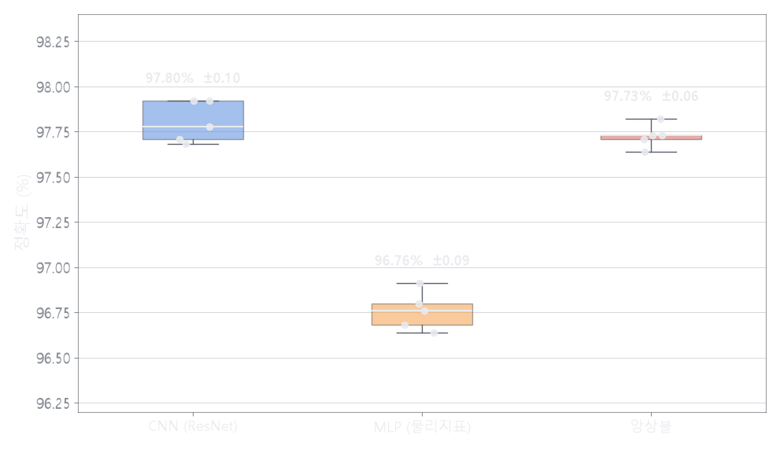
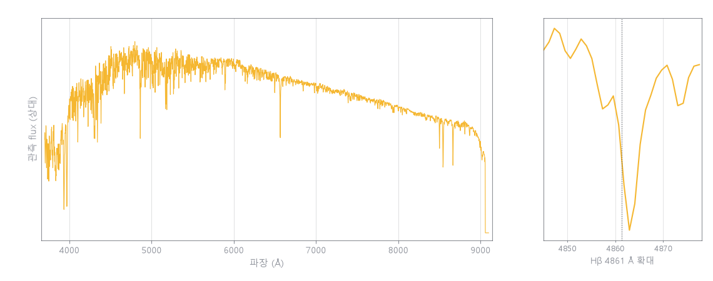
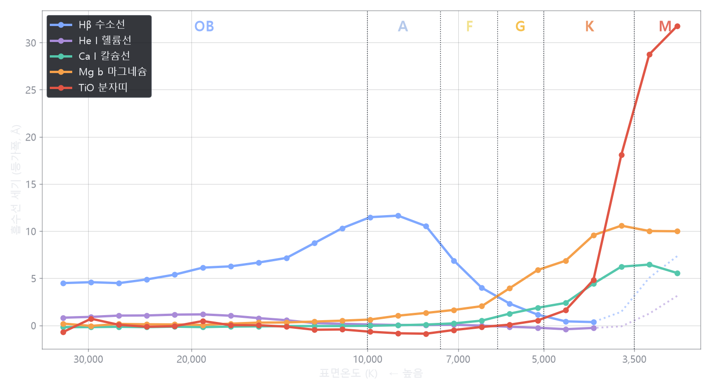
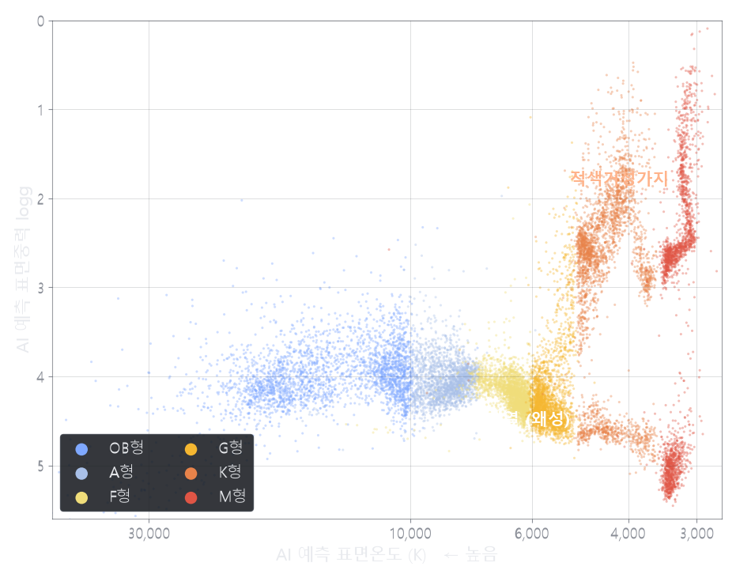
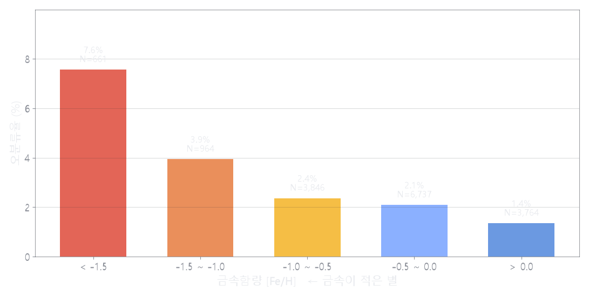

469
SIMBAD 등록 분광형과
대조한 별
대조한 별
27만 개의 실제 관측 스펙트럼으로 학습한 앙상블 AI가 별빛 하나에서 분광형과 광도계급, 온도, 표면중력을 읽어냅니다. 그리고 한 세기 동안 축적된 천문 데이터베이스를 오늘의 눈으로 다시 봅니다.
별빛을 파장별로 펼치면 군데군데 빛이 깎여 나간 흡수선이 나타납니다. 어떤 원소가 어느 파장의 빛을 삼켰는지가 표면온도에 따라 달라지기 때문에, 선의 모양만 보고도 별의 온도를 읽을 수 있습니다. 이것이 분광형(OB·A·F·G·K·M)입니다.

학습에 사용하지 않은 test 셋의 실제 관측 스펙트럼. 전처리를 거쳐 연속선을 1로 정규화한 상태.
천문학의 표준 참고자료 SIMBAD의 분광형은 1890년대 사진건판 분류까지 거슬러 올라가는 소중한 축적 자료입니다. 본 연구의 AI는 이 라벨과 독립적으로 별을 재판정하고, 판정이 어긋난 별을 제3의 물리량(문헌 실측 온도)으로 심판해 갱신 검토가 필요한 별의 목록을 만들었습니다.
'오류 확정'이 아니라 '재검토 후보'입니다. 최종 판단은 원 관측 자료를 가진 전문 연구자의 몫입니다.
아래 수치는 모두 학습에 한 번도 쓰지 않은 별로 측정했습니다. 같은 별이 여러 서베이에 중복 등장하는 경우까지 묶어서 분리했기 때문에, 정답을 미리 본 별이 시험에 섞이는 일이 없습니다.

한 번의 시험은 우연일 수 있습니다. 데이터를 다섯 번 다르게 갈라 매번 새로 학습시켜도 결과가 흔들리지 않는지 확인했고, 마지막에는 학습에 쓴 적 없는 다른 망원경(VLT/X-shooter)의 관측으로 시험했습니다.

앙상블 97.73 ± 0.06% (5-fold). 두 모델을 합치면 단독 MLP보다 약 1%p 높고, 판정이 더 안정적입니다.
많이 모으는 것보다 중요한 건 정답이 새지 않게 만드는 일입니다. 같은 별이 여러 서베이에 들어 있으면 학습과 시험에 나뉘어 들어가 성적이 부풀려지므로, Gaia DR3로 위치를 대조해 같은 별을 한 덩어리로 묶은 뒤 통째로 갈랐습니다.
관측된 빛에는 별 자신의 성질 말고도 여러 방해 요소가 섞여 있습니다. 실제 관측 파일 하나를 열어, 단계마다 무엇이 달라지는지 직접 넘겨 보세요.

망원경이 기록한 그대로입니다.
피커링과 캐넌은 스펙트럼 전체의 인상과 개별 흡수선의 세기, 두 가지를 함께 보고 별을 분류했습니다. 이 연구는 그 두 시선을 각각 다른 모델에 맡기고, 마지막에 합쳐 판정합니다.
정규화된 스펙트럼 3,401개 화소를 통째로 입력받아, 사람이 미리 정해주지 않은 특징까지 스스로 찾아냅니다. 흡수선의 모양과 깊이, 넓은 구간에 걸친 흐름을 함께 봅니다.
물리 법칙에서 유도한 값만 골라 입력합니다. 무엇을 보고 판단했는지가 처음부터 사람의 언어로 정의되어 있어, 판정 근거를 되짚을 수 있습니다.
AI가 실제로 읽어낸 흡수선의 세기를 온도순으로 늘어놓자, 교과서의 사하-볼츠만 이론이 예측한 봉우리가 그대로 나타났습니다. 수소는 1만 K 부근에서, 마그네슘·칼슘은 그보다 훨씬 낮은 온도에서, TiO 분자는 분자가 살아남을 수 있는 3천 K대에서만 강해집니다.

측정된 봉우리 — 수소 9,074 K(문헌 A0형 약 9,500 K), 헬륨 19,871 K(문헌 B2형 약 20,000 K). 음영 구간(4,000 K 미만)의 H·He 점선은 TiO 분자띠가 유사연속선을 눌러 생긴 과대평가로, 실제 물리가 아니라 저분해능 관측의 측정 한계입니다.
이 그림에는 문헌값이 한 개도 들어가지 않았습니다. 오직 AI가 스펙트럼만 보고 답한 온도와 표면중력으로 점을 찍었을 뿐인데, 주계열과 적색거성가지가 저절로 갈라져 나타났습니다. 데이터를 외운 것이 아니라 별의 물리를 읽어냈다는 뜻입니다.
세로축이 광도가 아니라 표면중력인 점이 교과서의 H-R도와 다릅니다. 광도를 구하려면 별까지의 거리를 알아야 하는데 스펙트럼 한 장에는 거리 정보가 없습니다. 그래서 분광 관측에서는 광도 대신 표면중력을 쓰는 Kiel 도(분광 H-R도)를 씁니다.
교과서 H-R도에서 비스듬히 내려가던 주계열이 여기서는 가로로 누운 띠로 보입니다. 축이 다를 뿐, 주계열과 거성이 갈라진다는 물리는 같습니다.

잘 맞힌 곳보다 틀린 곳이 다음 연구의 방향을 알려줍니다. 어디서 왜 어려웠는지를 물리적으로 짚어 두었습니다.
재현율 30.2% (N=43). 연속선 정규화가 백색왜성 특유의 매우 넓은 수소선 날개를 연속선으로 착각해 깎아냅니다. 전처리 자체를 우회하는 별도 경로가 필요합니다.
금속 결핍 별의 오분류율은 7.6%로 금속이 풍부한 별(1.4%)의 5배 이상입니다. 금속이 적으면 흡수선이 얕아져 더 뜨거운 별처럼 보이는 온도–금속함량 축퇴 때문입니다.
O형 별은 수 자체가 매우 드물어 단독 학습이 어려웠고, B형과 묶어 OB로 다루었습니다. 고온성 관측을 더 확보하면 O형을 분리해 낼 수 있습니다.

코드 · 학습된 모델 · 테스트용 스펙트럼 4개가 공개되어 있습니다. 압축을 풀고 파일 하나만 실행하면 첫 별을 분류할 수 있습니다 — SIMBAD에 'B5'로 등록된 HD 338529의 재검증도 직접 재현해 볼 수 있습니다.